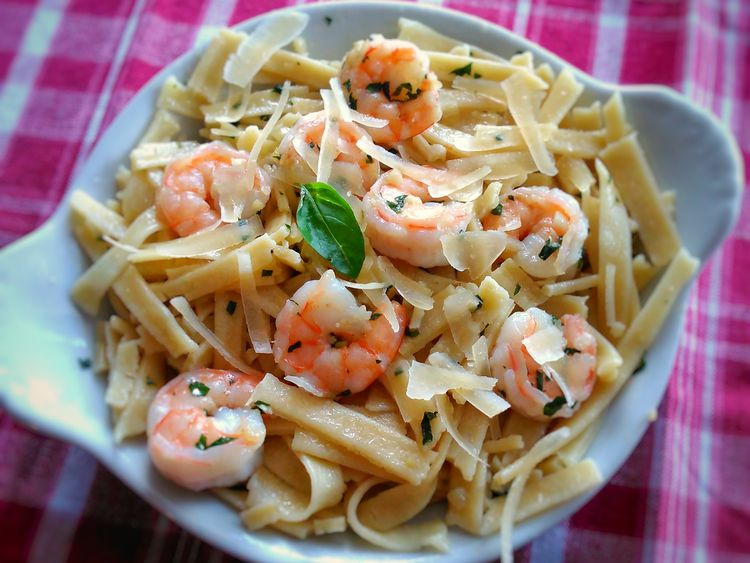

Linguine with Garlic-Butter Shrimp

Description
This dish is simple but elegant, and excellent if you're looking for something that's full of flavor without the heaviness of a cream sauce. Garnish with grated Asiago cheese as desired.
Ingredients
- 3 tablespoons olive oil, divided
- 1 (16 ounce) package fresh linguine pasta
- 1 pound large shrimp, peeled and deveined
- 3 tablespoons chopped fresh basil
- 2 teaspoons minced garlic
- 3 tablespoons butter, cut up
- 1/4 cup grated Asiago cheese, or to taste
Steps
- Bring a large pot of lightly salted water and 1 tablespoon oil to a boil. Cook linguine in the boiling water, stirring occasionally, until tender yet firm to the bite, 7 to 8 minutes. Drain and set aside.
- Heat remaining olive oil in a large skillet over medium-high heat. Add shrimp and saute until shrimp turns pink, 3 to 4 minutes. Add basil and garlic; cook for 2 to 3 minutes more.
- Add butter and cooked linguine. Toss until butter melts, making sure to coat the linguine with the sauce. Remove from heat. Serve immediately.